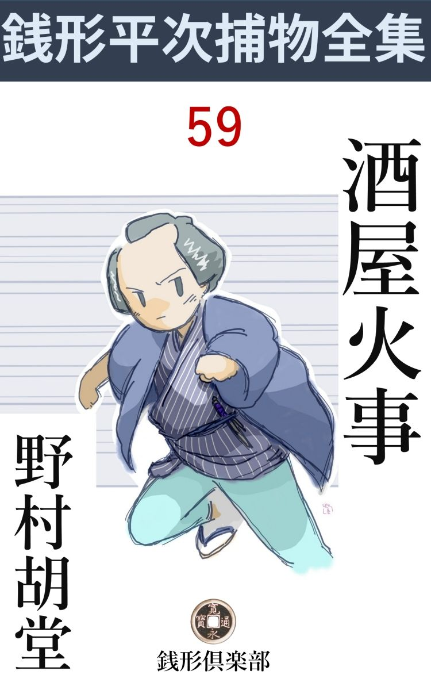
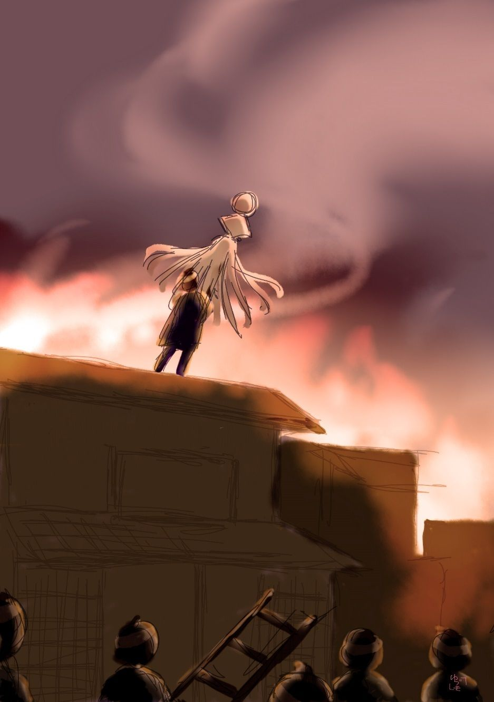

| 酒屋火事: 銭形平次捕物全集第59話 (銭形倶楽部) | |
| 野村胡堂 | |
| ZENIGATA CLUB (2018) | |

一
「親分。お早うございます」
「火事場の帰りかえ。八」
「へエ------」
「竈 の中から飛出したようだせ」
銭形平次------江戸開府以来と言われた捕物の名人------と、子分の逸 足 、ガラッ八で通る八五郎が、鎌倉河岸でハタと顔を合せました。まだ卯 刻 半 過ぎ、火事場帰りの人足がようやく疎 らになって、石垣の上は、白々 と朝霜が残っている頃です。
「ところでどこへ行きなさるんで？ 親分」
「三村屋も放 け火 だってえじゃないか」
「へエ。それで実は、親分をお迎えに行くところでしたよ」
「酒屋ばかり選って、立て続けに三軒も焼くのは穏やかじゃないネ」
「どこの餡 コロ餅屋だか知らないが、野暮な火 悪戯 をしたもので------」
「馬鹿だな。そんな事を言うと、餅屋に殴られるぜ」
「へエ------」
ガラッ八は埃りと煙で汚れた、長い顎をしゃくって見せました。
今年になってから、ほんの半月ばかりの間に、神田中だけでも三カ所の放け火があった------最初の一つは、正月八日の夜 半 過ぎ、浜町の大黒屋で、これは夜廻りが見つけてボヤですましたが、二度目のは、中四日置いて正月の十三日、外神田松永町の小熊屋で、これは、着のみ着のままで飛出したほどの丸焼け、三度目は正月十八日、------正確に言えば十九日の暁方、鎌倉町の三村屋が丸焼け、その上小僧が一人焼け死んで、女房のお久は、二階から飛降りて大怪我をしてしまいました。
「三軒揃って酒屋は変じゃありませんか。その上三軒とも薪と炭を商 い、三軒とも夜中過ぎの放け火だ」
「フム」
「それから、三の日と八の日を選ったのもおかしいじゃありませんか。御縁日か稽古日じゃあるまいし」
「面白いな、八。他に気のついたことはないか」
「そんな事をするのは、酒嫌いな奴でしょう、どうせ」
「ハッハッハッ。お前の知恵はそんなところへ落着くだろうと思ったよ------とにかく行って見よう。笑いごとじゃない。------お前も来るか」
「へエ------」
ガラッ八は疲れも忘れた様子で、忠実な犬のように従 いました。
三村屋の焼け跡は、見る眼も惨憺たる有様でした。まだ板囲いも出来ず、灰も掻かず、ブスブス燻 る中に、町内の手伝いと、火事見舞と、焼け跡を湿している鳶 の者とがごった返しております。
「親分、亭主の安右衛門が来ましたよ」
ガラッ八が袖を引かなかったら、平次もうっかり見遁したことでしょう。汗と埃りと、煤 と泥と、その上血と涙とに汚れた安右衛門の顔は、まことに、日頃の寛濶な旦那振りなどは、薬にしたくも残ってはいなかったのです。
「三村屋さん、災難だったね」
「お、親分さん------御覧の通り、私も三十年の働きが無駄になりました。明日からは乞食にでもなる外はありません」
「まア、そんなに力を落したものじゃない。町内でも、親類方でも、まさか捨てておく筈もないから」
「有難うございます。が親分さん、これが仲間や他人なら、痩我慢も申しますが、親分の前で、体裁の良いことを言っても、何にもなりません------どんなに歯 軋 りしても、三村屋は今日限りでございます。------親分さん、お願いでございます。この敵 を取って下さい。可哀想に、小僧の竹松は、逃げ場を失って死んでしまいました」
三村屋安右衛門は、五十男の体面も忘れて、声もなく泣いておりました。歪 んだ顔に嗚 咽 が走って手を挙げて指さす、少しばかりの空地の隅には、筵を掛けたままの、竹松の死体が転がっているではありませんか。
火災保険------というもののない時代。地所や家作や、現金を持たぬ者は、焼け出された日から、全生活を覆 えされて、ドン底に顚落したのは、間々あった例です。
「まア、此方へ来なさるが宜い------話を聴いたら、敵の討ちようもあるだろう」
平次は慰めながら、打ちひしがれた安右衛門を、物蔭に呼び入れました。
「何なりと訊いて下さい、親分さん」
「第一に------」
平次は目顔でガラッ八を火事場の跡へ追いやりながら続けます。
「------一番先に気のついたのは誰だえ」
「私でございました。飛出そうと思いましたが、縁側の雨戸はなかなか開きません。後で気がつくと外から釘付けにしてあったようでございます。お勝手の方へ廻ってみると、そこはもう一面の火で、店もどんどん燃えている様子ですから、これはいけないと思って、二階へ駈上がり、女房や番頭の伊助といっしょに、庇 へ飛出し、そこから飛降りました」
「外の者は？」
「手代の文治は火の中をくぐって出たそうで、ほんの少し火傷 を負いました。------娘のお町は、危うく焼け死ぬところを、お隣の家主の太七さんのところの惣領------周助さんに、煙の中から助け出して頂きました」
「小僧さんは？」
「可哀想なことをしました。銘々身一つで逃げるのが精一杯で、竹松が逃げ後れたことに気がつかなかったのです」
「フーム」
「それから、親分さん。これは何かお役に立つかもわかりませんが------、火の出たのは、確かに二カ所でございます。裏の薪や炭を入れておく物置と、炭俵を積んだ店といっしょに燃え上がりました。------これはもう間違いございません。現に、右左の羽 目 が、あの通り燃え残っているのでも解ります。早く駈け付けて下すった方が、みんなそう申しております。------こんな念入りな放け火は見たことがない------と」
「なるほど。念入りな放け火だな」
平次は静かにくり返しました。
「誰が一体、こんな目に私を逢わせたのでしょう？ 親分さん」
「怨みを受けるような覚えはないだろうか」
平次はそう言いながら、『お座なり』を言ってるような、極りの悪さを感じました。
「何んとも申されませんが、私の口からは申上げかねます」
「フーム」
「とにかく、私に怨みがあっての仕業 なら、相手はさぞ堪 能 したことでございましょう。大きく構えても問屋筋の借が相当ございます。その上女房の怪我やら、小僧の葬 いやら------」
明日の日がどうなる。三村屋安右衛門の顔には、絶望の色が濃い蔭を翳 ります。
二
江戸の火事の恐ろしさは、明暦 、天明の大火を引合いに出すまでもありません。
一度赤い風が吹くと、防火設備はあったにしても、マッチ箱を並べたような江戸の町家------無分別にも建混み過ぎた木造家屋は、ほとんど無抵抗に、無防禦に、際限もなく燃えて行ったのです。
従って、過 ち火、放け火に対する、江戸の法律の苛酷 さは想像以上でした。かりそめにも火を放けたものは、自分の家であろうと、他人の家であろうと、仮借 もなく火刑 、------燃え上らなかった場合でも死罪は免 れようがなかったのです。

過ち火を出しても手鎖 五十日、地主、家主、月番行事、五人組から、風上二丁、風脇二丁の月行事まで、三十日乃至二十日の押込めという峻烈ぶりでした。
その代り、時々出した火の元用心の触れ書も、実に行届いたもので、大風の吹く日は外出を禁じ、庇や屋根に水を打たせ、二階に灯を点けさせなかった時代さえあります。
放け火を捕まえるか、訴え出た者は、『御褒美人数之多少に依らず』白銀三十枚ずつ、------当時にしては非常な奮発です。『江戸の花』と言われた火事はこうまで用心され、警戒されました。それだけにまた冒険味が豊かで、そのスリルを満喫するために、落語の火事息子のように火事を何よりの好物にした人間も出て来たのでした。
ともかく、放火した者は、現場を見つかるか、後で捕まれば、間違いもなく、日本橋、両国、四谷御門外、赤坂御門外、昌平橋外を引廻しの上、以上五カ所へ捨札を建てて火 焙 りの極刑に処せられるのですから、泥棒や人殺しなどとは、まるっ切り話が違います。
銭形平次が乗出したのは、この物騒千万な放 火 魔 を挙げて、江戸の町人達の枕を高くさせるためですから、ケチな物盗りや、怨みの人殺しなどをあさるよりは、余っぽど緊張しているのも無理のないことでした。
「親分、見つけましたよ」
「何だ、八」
「火付け道具」
「何処にあった」
「炭俵の下ですよ。------あの通り、庇 へ火が付く頃、炭俵が崩れて、火付け道具を焼き残したのでしょう」
八五郎の指さす方を見ると、裏の物置のあたり、焼け崩れた炭俵の下に、焚 き付けの脂 松 に油綿を縛ったのが、燃え尽しもせず、踏み消されたままになっているではありませんか。
「浜町の大黒屋の小火 でも、それが見つかったんだろう」
「その通りですよ。親分」
「放 って置け。------誰が先に気が付くか、誰が持って行くか、少し気長に見張っていてくれ」
「へエ------」
ガラッ八は少し役不足らしい顔でしたが、それでも、素直にうなずいて見せました。
不意に------
「竹松！ お前は、お前はまア------こんな情けない姿になって------」
後ろで爆発する声があります。
ふり返ると、油で煮締めたような四十五六の古女房が、取乱し切った姿で、赤黒く焼け爛 れた、小僧の死体を抱き上げているのでした。
ゼイゼイする息、しゃくり上げる笛のような泣き声、泥に突いた膝も、衣 紋 の乱れも、何も彼も忘れてしまった母親の盲愛は、さすがの平次も長く見てはいられません。
「こいつはあんまりだ。------勘弁のならぬ奴だ」
平次は口の中でそう言いながら、三村屋の立退き先へ廻りました。太七の家 作 で、ほんの二三丁先、形ばかりの空家へ、焦げ臭い荷物といっしょに、五六人の人間が詰め込んでいたのです。
「おや、親分さん」
最初に見つけたのは、隣の家主太七の伜、三村屋のお町を火の中から救ったという周助でした。二十四五の平凡な男で、よく言えば実直そうな、鼻の大きい、眼の細い、柔和な感じのする人間です。
「お前さんは？」
「太七の伜でございます」
太七は鎌倉町屈指の家持ですから、親の名を言うのが順当だったのでしょう。
「お町さんを助けたのはお前だね」
「へエ------」
周助は照れ臭く鬢 を掻きました。
「その時の様子を聴きたいが------」
平次は上がり框 に腰をおろしました。奥には、足を挫 いた女房のお久や、火傷 だらけになった手代の文治がいるので、少なからず迷惑らしい様子ですが、平次の神経は、この時に限って、そんな事に少しも煩わされる様子もありません。
「誰がさきに見つけたか知りませんが、町中がハチ切れるような大騒ぎで眼が覚めました。雨戸を開けると、額が焦げるように近い火です。親爺といっしょに飛んで行って見ると、三村屋はもう表も裏も一面の火で、------お町さんが見えないと言う騒ぎです。それから、ただ一つ火のまわらない縁側から、夢中で飛込み、煙に捲かれて、ウロウロするお町さんを見つけて、どうやらこうやら助け出しました。運が良かったのです」
周助は手柄らしくもなくそう言って、まだ恐怖の鎮まらぬらしい、お町の顔を見やるのでした。
「そいつは大手柄だ。差し当り、お町さんの命の親というわけだね」
「------」
お町はうなずいた様子でした。神田の悪戯者が娘番付を拵えて、東の関 脇 に据えた容色 、疲れと怖れに、少し青くはなっておりますが、誰が眼にも、これは美しい娘でした。
「文治さんとか言ったね」
「へエ------私は、手代の文治でございます」
娘の後ろから顔を出したのは、火傷だらけの三十男、少し剽軽 そうなのもあわれです。
「お前さんは、とんだ怪我をしたようだね」
「大したことはございませんが、火傷ですから、始末が悪うございます」
黄蘗 か何かをうんと塗った顔、熱っぽい唇や眼など、平次は押して物を訊くのが気の毒に思うほどでした。
「お町さんと、何方が先へ外へ出たんだ？」
「よくはわかりませんが、私の方がさきだったようで。------なにしろ、火の中を泳ぐようにして、表口から飛出しましたんで、お嬢さんをおつれする隙もありませんでした。へエ------」
お町を救わなかったのが、恐らく千載 の恨事 だったのでしょう。そう言ううちにも、チラリチラリと周助の満悦の顔を見やります。
女房のお久は二階から飛降りて足を挫いたのを、百万遍もくり返すばかり。あとは家と店の品を焼いた口惜しさが一杯で、何を訊いても、一向に埒はあきません。
平次は早々に引揚げました。
三
「番頭さんじゃないか」
「へエ、これは、銭形の親分さん。御苦労様で------」
五十五六、すっかり禿げ上った番頭の伊助は、平次に小手招かれるまま、路地の奥へ入って来ました。
「三村屋さんも、とんだ事だったね」
「有難う存じます。------ようやく年の瀬を越したばかり、お嬢さんも厄 が過ぎて、今年こそお婿さんが来るというところを、------本当に災難でございました。これで、何も彼も滅茶滅茶でございます」
伊助は朝 寒 とは別に身を顫わせました。狐憑 きから落ちた狐のような顔が、妙に悪賢こさを思わせます。
「その聟というのは？」
「沢山ございますよ。周助さんも、手代の文治も、従兄 の仲吉さんも、みんななりたい口で------、へッへッ、でも持参金がなきゃあ、主人は承知しません。本銀町 の小金井様の御次男が御執心で、一と箱位は持って来てもと言う口吻ですから、いずれそんなところへ落着くところだったのでしょう。へッ、へッ」
妙なところへ、卑屈 な世辞笑いの伴奏が入ります。
「ところで、主人を怨んでいる者はないだろうか、火位は放けかねないという------」
「そりゃありますとも。------一番怨んでいるのは、お神さんの兄さんで、本当ならこの家を継ぐはずだった市五郎さん。これは、賭博遊 が好きで久離 切 られ、三河町で器用から思いついた、細工物をしております。もう五十になっても、梲 があがらないのですから、自分の生れた三村屋が恋しくもなるでしょう」
番頭伊助の舌は、思いの外深刻に動きます。
「それから」
「その次に怨んでいるのは、聟七人の口で」
「聟七人とは何んだ」
「聟八人のうち、一人が望みを遂げると、あと七人はあぶれ るわけでございます」
「なるほどね」
「あぶれ のうちでも、可哀想なのは、市五郎さんの伜、お町さんには従兄 に当る仲吉さんで。------これは火事と喧嘩が飯より好きという肌合の男でございます。その次のあぶれは手代の文治、これは望みが大き過ぎました。三枚目に生れ付いた、自分の柄 を忘れているようで、へエ、へッ、へッ。それからもう一人、周助さんというあぶれもございますが、これはお嬢さんを助けた人で、今のところは有 卦 に入っております。何しろ、命の親は大したことですからね。もっとも、良い気になって聟の口へ乗出したら、一ぺんにつぶれるんでしょう。五軒や八軒の長屋持ちの伜じゃ、一と箱の持参金の三国一とは相撲 が取れません。へッ、へッ」
何という悪い口でしょう。平次は胸の悪くなるのを精一杯の我慢で聴いておりました。
「そう言う番頭さんは、主人のことをどう思っているんだ」
「へエ」
痛いところへ触れたのでしょう。伊助はギクリとして口を緘 みました。
「私は二十年前に暖簾 を分けて貰うはずでございましたよ」
何と言う穏やかな調子に含ませた、深刻な怨みでしょう。
「なるほどね」
「それから三村屋は左前続きで。------この六七年は、定めの給料も頂かず、通いでは勤め切れないので、お二階に置いて頂く始末でございます。へエ」
「------」
そう聴くと、平次も二の句が継げません。五十五六まで小 店 に勤めて、まだ独身らしい老番頭が、いつの間にやら世を呪い自分を嘲けって、悪魔的な捨鉢な気持になって行くのでしょう。
「お前さんは独り者かい」
「へエ。二十五六年前、今のお神さんが若かった頃は、私も聟八人のうちの一人でございましたよ。------ちょうど、今の文治のようなもので、へエ」
狐のような顔が歪んで、泣き出したいような表情になるのを、伊助は自分の掌 で、よく禿げた頭の上から、ツルリと撫で下ろしました。
四
「親分、------拾った奴 がありますぜ」
「何だ。八」
「先刻の火付け道具」
八五郎は平次の耳に口を寄せました。
「誰だい」
「仲吉で」
「何だと」
「火事気違いの仲吉ですよ。三河町の細工物屋の息子、親父の市五郎は、この家 のお神さんの兄貴ですぜ」
「知ってる。それから何うした」
「脂 松 に油綿を縛ったのを、炭俵の下から拾い上げると、暫らく見ていましたが、そっと人に隠して、焚 火 の中へ放り込みましたよ」
「人に隠して------かい」
「後ろ向になって、焚火にあたるような恰好をして投り込んだんだから、間違いはありません」
ガラッ八は火事場の焼跡近く、見舞人達のために焚いた火のあたりを指しました。
「見つけてから、いちおう見直して焚火へ投り込んだのか、それとも、見つけると直 ぐ投り込んだのか」
「拾った時は、随分びっくりした様子でしたよ。一応見直すと、思いなしか、少し顔色を変えて、そのまま、焚火の中へ投り込んだようで------」
「フーム」
平次の顔は深沈とした色になります。
「あッ、いけねえ、親分。三輪 の親分が、仲吉をしょっ引いて行きますぜ」
「何だと」
平次もさすがに仰天しました。いつの間にやって来たか三輪の万七が、焼跡で働いている、仲吉を引っ括って行こうとしているのです。
「親分。------銭形の親分」
ニヤリニヤリと近づいたのは、万七の子分で、ガラッ八と張り合っているお神楽 の清吉でした。
「おや、お神楽の、何だい」
「外じゃございませんが、万七の伝言 を持って参 りました。------訴人があって、放火 は仲吉に決ったから、縄張り違いだが、八丁堀の旦那方のお差図で挙げて行く。銭形の親分に宜しく、とこう申しますんで。へエ、左様なら」
「------」
何と言う人を馬鹿にした顔でしょう。お神楽の清吉は切口上で言い切ると、三輪の万七と一緒に、仲吉を後手に縛って引揚げてしまいました。
「放火 の訴人は、白銀三十枚の褒美だ。そいつを誰が取るか、聴いて来い、八、番所へ行ったら解るだろう」
「へエ」
ガラッ八は疾風 の如く飛びます。
が、その帰りを待つまでもありませんでした。
「親分さん。訴人なら番所へ訊くまでもありません。私がよく存じております」
主人の安右衛門が、少し病的に興奮した眼を走らせて、平次の後ろに立っていたのです。
「えッ、そいつは不思議だ。誰が火を放けたんで------」
平次も少し呆気 に取られました。先刻までは、そんな事を気 振 りにも見せず、平次に縋り付かぬばかりに、敵を討ってくれと泣いた安右衛門です。
「女房の兄（市五郎）でなきゃ、あの伜の仲吉に決っています」
「それほど解っているなら、先刻言うはずじゃないか。御主人」
「うっかりしていましたよ。でも、昨夜宵のうちに、仲吉の野郎が、私の家の外をウロウロしているのを見た者があります」
「誰が見たんで------」
「私が」
「嘘を言ってはいけない。お前さんは誰かに、知恵を付けられて来たに違いない」
「とんでもない。親分さん」
「仲吉なら仲吉でも宜いが。------すると、浜町の大黒屋と、松永町の小熊屋に火を放けたのが解らなくなる」
「仲吉は神田中で知らない者のないほどの火事気違いですよ。親分さん」
「酒屋ばかり選って放けた理由 は？」
「------」
そこまでは安右衛門にも解りません。
「とにかく、昨夜、仲吉を見たというのは誰か、それを聴かして貰おうじゃないか。御主人、放火 は引廻しの上火 焙 りだ。お前さんも、甥 一人を丸焼きにしたいわけでもあるまい」
平次は、相手が手 剛 いと見て、峻烈に突っ込みました。
「実は、------これは内証 ですが、町内の使い走りをしている、与三松が見たと申しますんで。へエ」
「時刻は？」
「亥刻 頃（十時）とか申しました」
「少し早いな」
「へエ------」
平次はまた深沈たる瞑想に沈みました。
五
使い走りや火の番をしている与三松という中年男は、平次に縛られると、ペラペラと喋舌 ってしまいました。
「昨夜、仲吉兄哥 が三村屋の裏で、何か変なことをしていましたよ」
「変な事？」
「口笛を吹いたり、石を投ったり」
「それっ切りか」
「へエ。------どうも相済みません」
与三松は脳 味噌 の少し足りない人間ですが、言う事に間違いがあろうとは思われません。
すぐ三河町へ行くと、仲吉の父親の市五郎は、早くも伜が縛られたと聞いて、冷酒をあおって、大虎になっております。
「何だと？ 岡っ引が来た。仏様見てえな伜を縛って行きやがって、どの顔 下げて来やがったんだい。------そんなに火焙りにしたきゃ、三村屋の親爺を縛って行きゃがれ。借金で首が廻らねえはずだ。自分の家へ火でも付けなきゃ、盆までには首を縊 る野郎じゃねえか」
寄り付けそうもない勢いですが、平次もこんなのを扱う術 は心得たものでした。
「親方。------俺を知ってるだろうね------こんな事を言っちゃ悪いかも知れねえが、仲吉はこの平次が縛ったんじゃねえ。仲吉を火焙りにして宜きゃ、俺がわざわざここへ来るものか」
「何だと？」
市五郎は少しばかり鋭峰を納めて、茶碗酒の手を休めました。
「俺は仲吉兄哥を助けに来たんだ。------あんな気っぷの良い男が、人の家へ火なんか付けるものか。------それに、お町とは良い仲だってえじゃないか」
これは平次の作です。
「何を？ お町の阿魔 とは敵同士だ。下らねえ真似をしやがると、俺が承知しねえ」
「親方、若い者には若い者の考えがあるよ。そんな野暮は言わねえものさ。ところで、仲吉は三の日と八の日には、日が暮れてから出掛けるようだか、ありゃ何のためだい」
三の日と八の日------それは三軒の酒屋へ火を放けた日、とは市五郎も気がつきません。
「隣町の稽古所入りだよ、間抜な声なんぞ出しゃがって、それだからこの節の新造ッ子は洟 も引っ掛けねえ」
「ところで、仲吉の持物を見せて貰えるだろうね。何とかして明かりを立ててやるから」
「勝手にしやがれ」
半信半疑の様子で、市五郎はそっぽを向きました。
平次は下職に仲吉の手文庫を持って来させ、無理に市五郎を立会わせて見ると、中はがらくた ばかり、予期したお町の手紙などは一つもありません。
家の中を一とわたり見ると、稼業で使う油や綿がどこにでも置いてある始末、お勝手から物置を見ると、焚きつけの脂松が、これも束にして積んであります。
平次は市五郎を宥 め宥め、好い加減にして引揚げました。仲吉とお町とが、深い仲だったという証拠は一つもなく、従って火を放けないと言う積極的な申開きは立たないわけです。
もっとも、主人の市五郎は、その晩も酔って寝てしまって、便所へも起きなかったということを、住込の下職に証明さしたのは、容疑者の範囲を狭くする、せめてもの収穫でした。
家へ帰って来ると、
「親分、お町さんが来てますよ。傍で見ると、思ったより綺麗で------」
ガラッ八が入口に迎えて鼻をヒョコつかせます。
「解ってるよ。新造が来ると眼の色を変えて、そんな岡っ引はないぜ」
平次は大した期待もしない心持で、お静を相手に、しょんぼりと待っているお町の前へ出ました。
「お町さん、何か用事があるそうだね」
何と言う冷たい調子でしょう。
「親分さん、仲吉さんを助けて下さい。あの方は私の家へ火なんか放 けるような、そんな方じゃございません」
娘の生 一本 さ。平次の膝にでも縋りつきたい様子です。
「そうかも知れないが、証拠がなきゃどうすることも出来ない。あの晩仲吉がどこで何をしたか、それが解らなきゃ助けようはないぜ」
「------」
「あの晩仲吉は隣町の稽古所へ行くと言って、三河町の家は出たそうだが、稽古所へは宵のうちにほんのちょいと顔を出したきり、それから夜中ごろ帰るまで、どこにいたか誰も知らない」
「------」
「その前、松永町の小熊屋が焼けた晩も、浜町の大黒屋の焼けた晩も、稽古所へ行くと言って出たそうだが、稽古所からはやはり宵のうちに帰っている。その上あの晩、三村屋の裏で仲吉を見掛けた者もあるし、翌る日仲吉は、焼け跡から放火道具を拾って、人目に隠れて焼き捨てている------これじゃ免 れようはない」
平次は遠慮会釈もなく、冷たくまくし立てます。
「親分さん、待って下さい。これを申上げると、仲吉さんの心づかいも無駄になり、三村屋の暖簾 は二度と掛けられないことになりますが------」
お町は首を挙げました。少し青白い、品の良い顔が、絞 木 に掛けられたように引釣って、真 珠 色の涙が、ポロポロと頬を洗います。
「ね、お町さん、暖簾が大事か、人の命が大事か、恋が大事か、義理が大事か。------岡っ引の私には解らねえ。ここはお前の思案に任せようじゃないか」
「親分さん」
「酒屋を三軒焼いた罪は大きい。江戸中の憎しみのかかっている仲吉は、間違いもなく引廻しの上火 焙 りだ。------本人も覚悟をしたと見えて、白状してしまったそうだから、八日と十三日と十八日の晩、酉 刻 半 から子 刻 前まで、どこにいたか証人を立てて申上げなきゃ、まず助かる見込はあるまいよ」
「親分さん、みんな申上げます。------丸焼 になった上に、小金井様の千両が入らないとなれば、三村屋は潰 れるに決っておりますが、仲吉さんが火焙りになるのを、私は黙って見てはいられません」
「------」
「八日と十三日と十八日の晩------。宵から子刻 前まで、仲吉さんと、私は、------あの、裏の納屋におりました」
「証拠は？」
「この手紙、------御覧下さい」
お町は到頭、最後の切札を、帯の間から出したのです。仲吉からお町へ宛てた、逢引の打ち合せ。日も刻限もはっきり書いてある上、最後の十八日の分には、『今夜こそは一生のお別れ、これを最後に、私は京大阪へでも参ります。無理な首尾をしても宵から夜中まで、いつもの場所で逢ってくれるように』とあわれ深く綴 ってあるのです。
「これは八丁堀の旦那方にもお目にかけなければなるまいが、宜いだろうな。お町さん」
「ハイ」
お町は見る眼もいじらしい萎 れようでした。
「気の毒だなア、お町さん。この平次を怨むかも知れないが------その代り、千両箱を背負った化物より、もっと良い聟をお前に世話してやろう。貧乏しながら孝行するなら、両親だっていつまでも愚 痴 は言うまいよ」
「------」
平次の言葉は、打って変って温かいものでした。外はシトシトと降る雨。やがて春も近い物の気配です。
六
「親分。仲吉は許されるんですか、本当に」
「本当とも」
「変だね、少し」
「何が変なんだ」
平次とガラッ八は、三村屋の焼跡へ来て、板囲いの中をブラブラ歩きながら、その日も証拠あさりに夢中でした。
「だって親分。あの日、仲吉が火放け道具を見つけて、あわてて焼いたじゃありませんか」
ガラッ八の腑に落ちないのは、その点だったのです。
「親父の市五郎は、三村屋をうんと怨んでるから、仲吉はてっきり、親父の仕業だと思ったんだよ。松や、綿や、油にも見覚えがあるような気がしたんだ」
「なるほどね。------ところで、親分は三村屋の放火 ばかり気にしているが、三軒とも同じ奴がやったのなら、放 火 狂 野 郎 は外にいるんじゃありませんか」
ガラッ八の疑いは段々筋立って行きます。
「俺もそれを考えているよ。------大酒飲みの女房か何か、酒屋をうんと怨んで、そんな事をやらないものでもあるまい」
平次の想像は飛躍します。
「酒の仕入で、問屋筋の廻し者が、そんな悪戯をすることはないでしょうか」
ガラッ八の頭のよさ。
「そいつは素敵だ。------念のために、三軒の酒屋が、どんな酒を入れていたか、一応聴いて来るが宜い」
「おだてちゃいけません」
「おだてやしないよ。それ位気が廻りゃ、八五郎も大したものだ」
「へエ------」
ガラッ八は擽 ぐったく頸筋を押えました。
「大黒屋と小熊屋と三村屋と同じ人間が火を放けたなら、こいつは気違いでなきゃ、酒屋に怨みのある奴だ。------きっと近いうちに四軒目へ放けるに違いない」
「へエ物騒だね。親分」
「それとも、大黒屋と小熊屋の放火 の話を聴いて、他の奴が真似をする積りで三村屋へ放けたのなら、これは話が別だ。------俺はやはり後の方だろうと思うよ」
「へエ------」
「手前 は大黒屋と小熊屋の方へ行って見るがいい。俺は三村屋へ筋を引く奴を、根こそぎ洗い出してみる」
平次はそう言いながら、ヒョイと板 囲 いの外を見ました。
「おや？」
と、ガラッ八。
「シッ。------立ち聴きしている奴があるんだ。賢 いようでも、影法師が板囲いの隙間をチラチラ隠すことには気がつかなかったろう」
「誰でしょう。親分」
「恐ろしい相手だ。何をするか判らない野郎だ。気を付けろ、八」
二人は馴れた調子で、半分は眼配せですませながら、こう囁やきました。
平次とガラッ八はその夜のうちに、徹底的な調べにかかりました。
第一に伊助と文治と周助が、八日と十三日と十八日の夜、どこで宵のうちから夜 半 までの時間を過したか、それを調べあげて見ましたが、三人とも、縁日とか、風呂とかお通夜とか、それぞれ出かけている癖に、三人とも、器用過ぎるほど器用な不 在 証 明 を持っております。
三度目の火事があってから、五日も経ったのですから、これ位の用意をされても、どうすることも出来ません。それに、時計もラジオもない世の中で、半刻（一時間）や四半刻（三十分）の喰い違いは、どうにでも誤 魔 化 せたのです。
鎌倉町から浜町や松永町まで行って、適当な作業をするにしても四半 刻 もあれば十分でしょう。こうなると、不在証明のない奴が一番潔白だ------と言いたくなる位です。
「こいつはいけない」
平次の酢 ぱい顔というものはありません。
「三村屋の家にいる者が、外から雨戸を釘付けには出来ないじゃありませんか。伊助と文治は火は放けられませんぜ。親分」
ガラッ八の近頃の理屈強さ。
「裏から出て雨戸へ釘を差すなり、心張をするなりした上、先ず店口へ火をつけて、それから元の裏口へ廻って、そこへも火を放って家の中へ入ったのさ」
「なるほどね」
「店口には雑物は少ないが、裏は炭も薪もうんとある上、庇 が藁 葺 で燃えがよい。裏の火の手が先にあがったから、見る方が一寸誤魔化されたが、その実、裏口は外から閉っていなかったのだ------こう考えられないか。八」
「へエ------」
そう言われると一言もありません。
「何しろ早く挙げて、皆なを安心さしてやりたいネ。今日も焼け死んだ竹松の母親がやって来て、泣きながら伜の敵を討って下さいって頼んで行ったよ」
二人はそんな話をしながら、今度は三村屋の立退き所へ行って、伊助と文治の荷物------ほんの小風呂敷一つの小さい荷物を調べた上、家主の太七の家へ行って、周助の持物を見せて貰いました。
番頭の伊助は、思いの外溜め込んで、諸方へ小金を貸した証文をうん と持っていたのは予想外でしたが、その外には、文治が、主人の娘のお町へ宛てて、思いの丈けをクドクドと書いた『出さない恋文』を持っている外に、何の変ったこともありません。
周助は、千両箱持参の聟 が破談になったと聴いて、お町に取入る積りらしく、『命の親』を持参にする意気込で、猛烈に働きかけております。
その手廻りの道具は、男の癖にお洒落 道具で一パイ、平次もガラッ八も、周助の不景気な顔と見比べて、苦笑して引込んでしまいました。
もう一つ。火 放 け道具に使った、松も、油も、綿も、周助の家には似寄りの品も見付かりません。焚きつけは硫黄 付 木 の小枝で間に合せ、油はほんの少しばかりの燈油が、行燈 の皿と古い小さい油壺にあるだけ、綿は蒲団でも引っ剥 したら古いのが出て来るかも知れないと言った程度です。
七
「解ったッ」
平次はいきなり飛上がりました。
その晩、沈み返って帰って来て、お静やガラッ八ともあまり口も利かずに、煙草ばかり吸っていた平次ですが、やがて亥 刻 半 （十一時）と思うころ、不意にこんな大きな声を出したのです。
「親分、何が解ったんで------」
見上げたガラッ八の顔の長さ。
「何も彼も解ったよ。こんな詰らない事に、今まで気がつかないなんて、何と言うドジだろう」
「へエ------」
ガラッ八は自分が叱られているような心持です。
「八、いっしょに行こうか」
「どこへ行くんで、親分。もう亥刻 ですぜ」
ガラッ八は少し睡そうでした。
「先刻、三村屋から使の者が、小僧の初七日だからって、お菓子と酒を持って来たろう」
「ええ」
お静は顔を挙げました。いつまでも若くて美しい女房振りです。
「それが術 だったんだ、------俺と八が、トグロを巻いて自分の家にいるところを見届けて行ったのさ」
平次の話は奇っ怪です。
「あの使の小僧がそんな悪者ですかい、親分」
「小僧じゃない。小僧の口 占 を引く奴がいるんだ」
「それがどうしたんで」
と、ガラッ八。
「何でも宜いから、面白いものが見たかったら、いっしょに来るが宜い」
「へエ、行きますよ」
「支度をしろ、------少し手強 いぞ」
二人はそそくさ と支度をすると、お静と下女を残して、サッと闇の街へ飛出しました。
「どこへ行くんで」
ガラッ八はまだウロウロしております。
「シッ」
二人はもう三河町へ入っておりました。
「おや、市五郎の家へ------」
「黙っていろ。------間に合えば宜いが」
平次の調子には、何とも言えない不安があります。
「何の間に合うんで、親分」
「間に合わなきゃ、もう一軒酒屋が焼ける」
「へエッ」
ガラッ八には、謎はどこまでも謎のままです。
「シッ」
ちょうど子刻 （十二時）、上野の鐘がかすかに余韻 を引いて鳴り止むと、どこからともなく、ユラリと出て来た者があります。
「------」
平次は、飛出そうとするガラッ八を、どんなに一生懸命押え付けたことでしょう。
やがて黒い影は、市五郎の裏の納屋へ、羽目板の破れから手を入れて、何とも知れぬものを取出すと、恐ろしい早さで、スタスタと新石町の方へ飛んで行くのです。
「八、覚 られるな」
二人は追跡のあらゆる秘術を尽しました。見遁 さず、覚られずに、夜更けの街を跟 けるのは、全く容易の業 ではありません。
やがて黒い影は、路地の中へスルスルと消え込みました。
「俺はここにいる。手前 は、大廻りに横町からあの路地の向うへ出ろ」
「------」
八五郎はこんな事には馴れておりました。事態容易ならずと見ると、日頃の饒舌 を封じて、平次の言うままに、路地の向う側へ廻ります。
しばらく時が経ちました。待っているものには、二刻三刻のように思いましたが、実は、ほんの、煙草二三服の暇だったでしょう。
ポ------ッと路地の中を染める火。
四軒目の酒屋、岸半助の裏庇 が燃え出したのです。
「御用ッ」
銭形平次は飛込みました。が、曲者は早くも身を翻し て、路地の向う側へ、真の飛鳥の如き素早さです。
「野郎ッ。待っていたぞ」
そこには力自慢のガラッ八が、手を唾 だらけにして待ち構えていたのです。
「八、頼むぞ。俺は火を消す」
「合点だッ」
曲者と八五郎は四つに組んで、路地の中を、コロコロと転がっております。
この騒ぎを聴いて、バタバタと戸の開く音。
× ×
曲者は、家主の伜周助だったのです。
番所へ送った帰り、暁 の霜を踏んで、ガラッ八は問いかけました。
「今度ばかりは解らない、絵解をして下さい、親分」
「何でもないよ。周助の家に、付火 道具がなさ過ぎたのが怪しかったのさ」
平次の答の無造作さ。
「へエ------」
「どんな家だって、綿の切っ端や、余分の油や、焚きつけのないところがあるものか」
「なるほどね」
「もっとも、あの放火 道具を隠してある場所が、もっと早く判れば、何でもなかったんだが、市五郎の家の納屋とは気がつかなかったよ。------後で考えて見ると、仲吉に、疑いがかかるように、三八の日にお町と逢引することを知って、その日を選って火を放けて歩いたほどの奴だから、放火 道具だって、あの納屋に隠すに決っているんだが、そこまで気のつかなかったのは凡 夫 の浅ましささ」
「その代り、あんまり早く放火 道具を見つけたら、反って仲吉が疑いをますじゃありませんか」
と、ガラッ八。
「それも、そうだな」
「何だって酒屋ばかり選って火を放けたんでしょう」
「世間の眼を誤魔化 すためさ。------周助がお町に弾かれているから、自分の隣の家へだけ火を付けて見ろ、すぐ知れるじゃないか」
「それにしても無法じゃありませんか」
「あれは並の人間じゃないよ。もっとも、始めの一軒は試して見る気だったんだ。同じような店造りの、炭や薪のある家へやって見たが、うまく行かなかった。大黒屋の小 火 はそれだよ。二度目の小熊屋も同じ店造り、同じ炭薪だ。これは思う通りに燃えた。そこでいよいよ三軒目に、目的の三村屋を焼いたのさ。------三村屋に怨みもあるだろうが、やはり周助は火事の好きな気違いさ、仲吉の火事好きと違って、これは本当に怖いよ」
「------」
「最初は三村屋を皆殺しにする積りだったろう。が途中から気が変って、お町を助けて、命の親になってやろうと思ったに違いない。その辺は正気だね------放火道具というものは、不思議に大抵は焼け残るものだ。お町を助けて『命の親』扱いにされた周助は、夢中になってそれに気がつかなかった------そこへ仲吉がやって来て、あれを拾ったのさ」
「三軒に放火 をしたのに、どうして、三村屋だけ狙ったと解ったでしょう」
「外から雨戸を釘付けにして、二カ所に火を放けてるじゃないか」
「へエ------」
ガラッ八はすっかり恐れ入ってしまいました。
「焼跡で二人の話を立聴きしたのは周助さ。自分の身が段々危うくなったのと、------お前が『放火 は酒呑の女房か、問屋の仕入れの関 係 で、ただ滅茶滅茶に酒屋を怨む者の仕業かも知れない』と言ったのを聴いて、あの気狂い奴 、四軒目を焼く積りになったんだよ。------それが罠 とは気がつかなかったろう」
「太い野郎だね、親分」
「ちょっと類のない悪党だよ。放火 に出かける前に、岡っ引の家へ初七日の配り物をさせて、小僧に俺のいるのを見届けさせたのは芸が細かい」
「だがな八、イヤなことばかりじゃないよ。お蔭で千両箱の化物のような聟が引っ込んで、仲吉とお町はいっしょになれるし、三十年来の市五郎と安右衛門の仲違いも、この辺で幕だろう。------こうなると、貧乏も悪くないと思うだろうよ」
悪者一人火刑 にしても、平次には慰むるところがあったのです。
（編注）
作品中には、身体の障害や人権にかかわる、差別的な語句や表現が見られますが、本書が成立した当時の時代背景等が現代とは異なる古典的な文学作品でもあり、著者が故人でもありますので、底本のままとしました。ご理解、ご諒承のほどをお願い申し上げます。
著者---野村胡堂
挿絵---萩 柚月 © 2017
初出---「オール讀物」昭和十二年一月号 文藝春秋社
底本---「錢形平次捕物全集」第三巻 河出書房 昭和三十一年六月十五日初版
編集・発行 銭形倶楽部